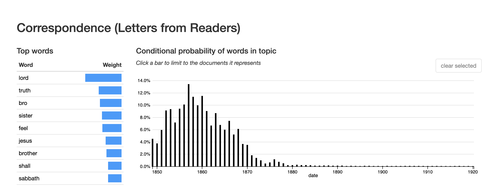

As a people who claim to have advanced light, we are to devise ways and means by which to bring forth a corps of educated workmen for the various departments of the work of God. We need a well-disciplined, cultivated class of young men and women in the Sanitarium, in the medical missionary work, in the office of publication, in the conferences of different states, and in the field at large. Attributed to Ellen G. White. Published 1904.
Woman, especially the woman of to-day, is too apt to become discontented with the quiet of home life and home-making. There is danger that the sentiment which is encouraging women to enter the professions and take a place in business life, will engender distaste for the nobler profession of home and character-building. Emma Sanderson, 1899.
The role of women in Seventh-day Adventism, and the gender dynamics within the denomination more broadly, pose a curious puzzle. On the one hand, the leadership of Ellen White and the emphasis on health, with the concurrent need for women nurses and physicians to share the faith through health care, provided a robust framework for women to take an active role in the religious life of the denomination. At the same time, a focus on family and the home as the primary site of women’s labor and the exclusion of women from ordained ministry reflected and reinforced more patriarchal power structures and a “separate sphere” for women’s religious practice. As a result, church members heard multiple and often conflicting messages about the labor they were called to undertake in seeking their own salvation and that of those around them.
These multifaceted, and often-time contradictory, influences provide an instructive example of the complexities of gender and religion during the nineteenth-century. Within Seventh-day Adventism, religion was neither necessarily liberating, providing women with opportunities denied elsewhere, nor necessarily conservative, disempowering women through rhetoric of difference and domesticity. Instead, it was both. For Seventh-day Adventist women, their work was frequently tied to the mission of the church, whether that be in spreading the message and giving testimony of their experiences, raising children and providing for their physical and spiritual health through food, or working for the cause as a physician or as a colporteur, distributing denominational literature . Though not ordained, women were granted teaching and missionary licenses to preach, served in leadership positions at all levels of the denomination, and, in the person of Ellen White, served as the conduit for the divine.
This chapter focuses on the relationship between time and gender seen in the religious culture of Seventh-day Adventism as a lens onto broader dynamics of gender and belief in nineteenth-century America. Building on the cycles of end-times expectation identified in Chapter 3, I explore the implications of the temporal imaginary on the culture of the denomination. Time during the nineteenth century was undergoing fundamental shifts due to the increasing standardization and mechanization, as well as due to scientific discoveries regarding the age of the earth and the processes of evolution. Concurrently, notions of masculinity and femininity were shifting as scientific and technical mastery of time was coded in terms of masculinity, and the older, “natural” but also irregular organization of time as “feminine.” In the face of these changes, Seventh-day Adventists embraced their own reorganizations of time, holding Saturday as the day of rest that began not with the striking of the clock but with the setting of the sun on Friday. They also rejected the emerging scientific consensus from fields such as geology and biology that the earth was billions of years old, rather than the thousands of years typically held to be indicated by Scripture. This organization of time was motivated by their belief that they were living in the last days of human history, as indicated in prophecy, and that the second coming would occur very soon.
Religion in the nineteenth-century has been studied in terms of the opportunities for power disruption made possible during periods of revival or radical expression, as well as in terms of the sequestering of women’s influence into the domestic space brought about by the “feminization” of religion. Within Seventh-day Adventism, we see both. Inhabiting an alternative temporal imaginary and repeatedly anticipating the second coming, they maintained a level of disruption that created space for the development of alternative gender constructions. At the same time, as time continued and pressures for respectability pushed against the radical impulses necessitated by the second coming, more separated and patriarchal gender constructions were advocated. This tension has resulted in a contested legacy around gender within the denomination. Additionally, this dynamic between beliefs and gender, particularly visible within Seventh-day Adventism, sheds light on tangible effects of beliefs on the culture of a particular community. The second coming and the surrounding events were not abstract theological concepts for early Seventh-day Adventists but foundational realities with implications for how they inhabited the world with regard to time, how they structured their community, and how they developed culturally.
Time and the Religious Culture of Seventh-day Adventism
The early Seventh-day Adventist church provides an instructive lens onto the relationship between “time” and culture. The denomination developed during a period when time was being reconceived due to changes in technology and science. Denominational leaders also organized around a particular set of beliefs regarding time: that time was nearly at an end and that salvation was linked to a proper ordering of time.
Although rarely thought about directly, time is an unstable feature of human experience and one that is profoundly shaped by the conceptual and narrative frameworks through which one interprets the world. While debates regarding the organization of time were not unique to the nineteenth century, the century was one of particular upheaval in terms of standard assumptions about time, as understandings of history, of progress, of government, and of Christianity all underwent significant revision in the face of political revolutions and advances in science and technology. Older assumptions of time as cyclical, already under stress from the changes of the Reformation and the Enlightenment, gave way to a sense of time as linear, as unique and irreversible. Under a linear framework, the dramatic political reorganizations could be understood as singular, and as representing progress from the older model of the divine rights of kings to all men being created equal, capable of and entitled to self-government. History itself, in this context, became the work of identifying and articulating that progress.
Within the realm of religion, standard practices and assumptions of Christianity, which had historically contained both cyclical and linear patterns of time, shifted to privileging the linear. Emphasizing Genesis to Revelations as a describing the start and end of historical time, nineteenth-century Protestant Christians were primed to interpret their lives and world events as part of a divine historical drama moving quickly toward its completion. For many, this embrace of linear time also corresponded with an embrace of a narrative of progress, couched in religious terms as hope in human perfectibility or of the potential for ushering in the millennium through conversions.
Developments in technology and science also contributed to significant changes in the conception and experience of time during the nineteenth century. Chief among these was the growing prevalence of and reliance on clocks not just as devices that reflected time, but as the source and arbiter of time itself. Previous generations conceptualized time as determined first by the sun, and then captured by the clock, and as a result, time was understood to vary by locality, depending on ones position relative to the earth’s orbit. This system worked well enough when most people remained within a relatively restricted geographic space. The development and spread of the railroad, however, introduced new logistical challenges to the keeping of time, enabling persons and goods to move long distances quickly and in so doing, move through multiple local times. The slow adoption to standardized time and the creation of the current time zones was part of a overall reshaping of notions of time during the nineteenth century, from a natural feature of the world marked by the sun and other regular rhythms of agriculture and human bodies to an abstract, mechanical reality set by some authority and disconnected from the variations of the physical world.
While technology in the form of clocks and railroads reshaped the daily experience of time, the broader understanding of historical time, of the extent of the past, was also coming under revision with advances in science, particularly with the development of the publication of Darwin’s On the Origin of Species in 1859. Previously the sense of cosmic time was guided by the Genesis story, where the world came into being through divine command less than ten-thousand years ago and was established for the dominion of “man.” Darwin’s theory of evolution, as well as other scientific developments in areas such as geology, challenged that religiously derived sense of time. These theories forwarded a long and largely impersonal historical account, one in which human beings appeared only recently and which seemed governed more by chance than by the careful plan of a benevolent god. As a means of confronting this more chaotic picture of time, many embraced a historical narrative of progress, with evolutionary processes leading toward the improvement and gradual perfection of human beings and society.
Making sense of time and creating narratives that would give meaning to experience in the face of such upheaval presented a major challenge for nineteenth-century authors. One strategy was to turn to gender as a means of creating and clarifying the new relationship with history, with technology, and with religion. For many American (male) intellectuals, gaining mastery over the new conceptions of time frequently entailed reinforcing binaries, such as those between men and women, between races, and between cultures. As a result, literary authors and others relied on tropes that associated “the male with history and the female with ahistoricity; the male with intellectual acuity and the female with mental deficiency, based on Darwinian presumptions; the male with progressive civilization and the female with stultifying primitivism; or the male with Christianity and the female with paganism.” While the social and political world was organized along a vision of linear and progressive time, as determined by the “objective” arbiters of science and technology, “women’s time” was different and was composed of “the cyclical time that conforms to nature through gestation, regularity, and biological rhythms, and the monumental time that evokes infinity through its affiliation with myth, mysticism, and the cosmos.” Bound to monthly cycles as well as the cycles of childbearing, women were presented as a foil against which masculine mastery over time was brought into being. As this “modern” time took hold, all those who embraced other organizations of time found themselves outside of the cultural mainstream and its power structures, including the early Seventh-day Adventists.
Reconstructing Time in Seventh-day Adventism
For Seventh-day Adventists, these shifting temporal markers shaped the religious culture of the denomination, as members worked to articulate their own understandings of time, rooting time in the natural world as understood through a literal interpretation of the Bible, while also enabling believers to inhabit the increasingly mechanistic world of the late nineteenth and early twentieth centuries. Their conception of time developed along a number of different lines, seen in their organization of the week around Saturday, the day around the sun, and historical time on a literal creationism. Uniting these approaches, their orientation toward standard time and toward historical time was informed by their beliefs about the second coming and eschatological time, and their belief that history was moving rapidly toward its completion, marked not by gradual progress but by the persecution of Seventh-day Adventists and their salvation through the Second Coming of Jesus.
While all those who followed Miller shared the the belief that they were living during the last moments of human history, Seventh-day Adventism expanded their reorientation of time to the week and the day. Referred to as the “third angel’s message,” early Seventh-day Adventists turned to the book of Revelation to interpret the events surrounding 1844. As summarized by George Holt,
From 1840 to 1843, we heard the angel, [Rev. xiv, 6, 7,] “Saying with a loud voice. Fear God and give glory to him; for the hour of his judgement is come,” &c. This angel proclaimed the vision as it was written on the chart, and brought us to the tarrying time. “And there followed another angel saying, Babylon is fallen is fallen.” “Come out of her, my people.” This second message brought us out from the different churches to which we belonged, or from Babylon. These two angels brought us to the tenth day of the seventh month, 1844, where the 2300 days ended. … Now we have the message of the third angel, which was to immediately follow the others, “Saying with a loud voice, If any man worship the beast and his image, and receive his mark on his forehead, or in his hand, the same shall drink the wine of the wrath of God.” This third angel is also saying, “Here is the patience of the saints; here are they that keep the commandments of God and the faith of Jesus.”
The first message, that the second coming was at hand, was taught by William Miller in his interpretation of the “2300 days” mentioned in the book of Daniel. This, together with the message of the second angel, that believers should leave the churches of which they were members, accounted for time up to October 22, 1844. Now they found themselves living under the “message of the third angel,” that the sign of the faithful was to keep the commandments, and specifically keeping the Sabbath on the seventh day of the week, rather than following “the beast and his image” — understood as the Roman Catholic Church — in observing Sunday. Convinced that they were indeed living in the last days, they introduced a second shift in their temporal framework, linking salvation to reorganizing the week.
Where the adoption of Saturday Sabbath involved a reorientation of the week, determining the start of the Sabbath required church members to also consider the organization of the day. Although they inhabited a world increasingly structured by standard time, Seventh-day Adventists chose to maintain older natural rhythms to structure their religious practice, using the sun rather than the clock to mark the start of the Sabbath on Friday evening. In 1855, James White commissioned a study by J.N. Andrews, a fellow SDA “pioneer” and theologian, on the proper method for marking the start of the Sabbath, published in the The Advent Review and Sabbath Herald. While there had been some debate up to this point regarding what marked the start of the Sabbath – with options including 6 p.m. local time, sunrise, and sundown – both Andrews and White came to the conclusion that following the natural rhythm of the sun was more in keeping with the Genesis description of the “day” and therefore the proper indicator for the community to embrace. In his assessment of the arguments for 6 p.m., Andrews notes that “The hours in the New Testament are not the same as our hours. With us an hour is 60 minutes, and is never more nor less. But in the New Testament it is the twelfth part of the space between sunrise and sunset … The division of the day into hours was not of divine appointment, but originated with the heathen!!!”
Time, Andrews noted, is a variable construct, and one marked differently in the Biblical literature. He set up a hierarchy of modes of marking time, linking the sun to a Biblically endorsed ordering of time and a reliance on clocks, with regular hours and minutes, to the heathen or the ungodly. While the conclusion by Andrews guided the religious practice for the denomination going forward, the tension between these different modes of keeping time resurfaced over the early years of the denomination. As the faith spread beyond the United States, the logistics of marking time by the sunset received renewed consideration in the context of the northern altitudes. Discussing the case of Norway in response to a church-member’s inquiry, the editors note, “Now the query sometimes arises, As the Sabbath is to begin at sunset, and the sun here does not set at all, where is the end or the beginning of the day ? But the sun does virtually set. It reaches the lowest point in its circuit. … and so the revolution of the earth, which measures the day, can be marked then as accurately as before.” In this way, the case of the perpetual sunlight experienced at the poles was dismissed as an argument against the “natural,” sun-based system of marking time, for the day, defined as the rotation of the earth on its axis, was still discernible.
In addition to re-ordering the week and the day around what they understood to be a biblical vision of historical time, early Seventh-day Adventists also advocated for an alternative sense of historical time. They rejected the evidence of geology for the length of history and the evidence of evolutionary sciences regarding the development of life, with its concurrent reorganization of historical time, and insisted instead on the creation narrative understood in terms of literal days, with nature created as complete at the time of creation, and on a temporally short period of the history of the world. For Seventh-day Adventist commentators, the developing sciences of geology and evolutionary biology posed a direct threat to their faith; either science or the Bible was correct. “It is a well-known fact that most of the geological theories extent impinge against the plain teachings of God’s word. Geologists would have us to know that their theory is correct, no matter what prophets and apostles may say to the contrary; thus divine truth must be sacrificed on the altar of geological speculations.”
A similar antagonism between the Bible and science is invoked in discussions of evolution: “So just as surely as evolution is ‘directly antagonistic to the doctrine of creation,’ so surely are those who hold to evolution placed ‘directly antagonistic’ to the Bible.” The extended vision of the history of the world offered by these sciences was seen by Seventh-day Adventists and others as in direct contradiction with the account of creation given in the Bible. Not only did these sciences pose a threat to the veracity of the Biblical account, but they also threatened the Seventh-day Adventist understanding of time. The calculation of the “2300 days” of Daniel and the identification of the start of Jesus’ work in the Sanctuary depended on the Bible being a reliable historical source. Were the world indeed old and its inhabitants the result of the slow process of evolution rather than discrete acts of creation, the whole temporal framework of their faith was suspect.
Faced with the incompatibility of scientific theories and their belief system, Seventh-day Adventist leaders defaulted to their religious beliefs, and in so doing inhabited an alternative historical narrative to that of their surrounding culture. Many Protestant groups adapted the logic of progress that the sciences seemed to encourage to the Christian narrative, preaching the increasing salvation of souls and the righting of social ills in the years leading up to the second coming. By contrast, Seventh-day Adventists anticipated increasing corruption and their persecution at the hands of state due to their alternative temporal framework.
But the prophecy indicates a change….
An image to the beast would be something made which resembled the beast. The papal beast was a union of church and state. The church controlled the state, and ecclesiastical decrees were enforced by the civil power, at the dictation of the church. The dungeon, the stake, and all the terrible work of the Inquisition during all the dreary years of its existence, tell the sequel.
Making an image to the beast is, therefore, reversing the principles upon which the republic has been founded for more than a century, and effecting a union of church and state. This means the destruction of liberty, and the enthronement instead of a despotism which will invade the citadel of conscience, and tyrannize over the souls of men.
More than fifty years ago the people now known as the Seventh-day Adventists took the position, based upon their interpretation of prophecy, that this nation would turn away from the principles upon which it was founded, make an image to the beast, and become a persecuting power.
Holding the good of the United States to be the strict division of religious and governmental powers, rather than the establishment of a religious “city on the hill,” Seventh-day Adventists anticipated that the state would one day (soon) begin to enforce religion, and particularly the keeping of Sunday Sabbath. In so doing, the state would become “an image to the beast,” where the was understood to represent the Roman Catholic Church, and the persecution of the Seventh-day Adventists for their Sabbath-keeping practices would begin. Rather than progress, Seventh-day Adventists anticipated a falling from grace for the nation and the trial of their faith in the process.
Through their embrace of different temporal paradigms, early Seventh-day Adventists created a religious culture that was in tension with that of other nineteenth-century Protestants, one where alternative orderings of gender were able to thrive at various times in their development. From a weekly rhythm guided by the natural “time” of the sun to a historical and cosmic narrative focused not on progress but on disruption leading up to the rapidly approaching completion of history. While always in conversation with the progress-oriented, evolutionary, and standardized time of their surrounding culture, the distinctive temporal imaginary of the Seventh-day Adventists created space for the continued leadership of Ellen White, and for a sharing of the labor of preparing for the second coming, both within the context of the home and family and in the context of missionary labor in the world.
Negotiating Time and Gender
Expectation of the end of the world is difficult to sustain over long periods of time. In his Foreword to William McLoughlin’s Revivals, Awakening and Reform, historian Martin Marty notes that “Individuals do not ordinarily live their lives at a single pitch of intensity. Periods of high drama are interspersed among longer periods of mild boredom. After times of vitality come stretches of exhaustion. As with individuals, so with cultures.” End-times expectation, that sense of living at the monumental close of history, is an example of such periods of high drama, one that has recurred at various points in Christian history and is particularly entwined with the history of Protestantism in the United States. For Seventh-day Adventists, who trace their roots to one of the more notable surges in end-times expectation at the close of the Second Great Awakening, time and end times expectation is core to their religious culture. However, just as with their contemporaries, the pitch of expectation varied over their history. As a result, rather than a consistent awareness of and focus on the second coming, cyclical patterns around periods when the second coming seemed, for one reason or another, particularly likely emerged, as I discuss in Chapter 3.
Such cycles also contributed to instability in other cultural aspects of the denomination, including ideas about gender and the roles available to women within the denominational structure. With increased attention to questions of gender, race, and class, scholars who examine patterns across multiple revivals have drawn attention to the ways women and members of other marginalized groups feature prominently during periods of upheaval or revival. Such analysis has been done using the frameworks of theorists such as Mary Douglas, Victor Turner, and Max Weber, parsing revival periods as moments of disruption in social norms and hierarchies, where members reject or challenge existing rituals until a new equilibrium is achieved and order is re-established. These frameworks help explain periods of unusually expansive behavior within religious and cultural groups, as well as the more subtle but lasting cultural shifts that revival moments leave in their wake.
In analyzing the development of religious movements, scholars tend to rely on sociological theories to trace the progression from “sect” or “cult” to church. For early Seventh-day Adventism, the standard historical narrative has been one of slow accommodation to the surrounding culture, where Seventh-day Adventism progressed from a group at the edges of the Millerite movement to an established denomination, and one that was increasingly inscribing a gendered hierarchy based on “separate spheres” and female domesticity by the 1920s. These general patterns of accommodation and secularization - in the sense of becoming “like the world” - help explain the overall structural shifts in the Seventh-day Adventist theology and religious culture, but also obscure the ways that culture was negotiated at multiple point along the way. While scholars such as Laura Vance convincingly argue that the trajectory of the Seventh-day Adventist denomination has historically been toward accommodation to prevailing cultural norms and toward increased affiliation with the traditional Protestant denomination, the early years of the sect indicate that this progression was complex and contested. As Vance notes with regard to Ellen White’s positions on female leadership in the denomination, “the seeming contradictions of White’s admonitions, life, and advice are not easily reconciled.”
Additionally, other scholars have commented on the ways the culture of Seventh-day Adventism is gendered in ways at odds with their surrounding culture. In their chapter on “Gender,” Bull and Lockhart link “feminine” characteristics of the denomination to the shared experience of Seventh-day Adventists and women in finding themselves on the outside of American power structures. The authors note that “time” functioned as a defining characteristic for SDA members, who organized their lives around Saturday Sabbath-keeping, and open the door for further study into the gender dynamics within the denomination in relation to their surrounding culture. They point to Seventh-day Adventist’s commitment to “temperance, health reform, and self-control” as well as their assumption of “caring, healing, and nurturing roles” as evidence of an overall “feminine” orientation connected to their alternative ordering of time. Rather than describe “feminine” characteristics as a static constellation of features that were promoted within the denomination at various times, however, I focus on the organization of time, rather than cultural exclusion, as a primary force in shaping the culture of the SDA. both in making space for more female leadership than was common in nineteenth-century religious movements and in contributing to a culture that appeared “feminine” because of its rejection of the prevailing, masculine, reorganization of time.
By looking at the first seventy years of the denomination, those when the church was lead by Ellen White, it becomes possible to construct another layer in our understanding of nineteenth-century revivalism and the processes by which distinctive religious cultures develop, in this case around the key issue of time. While the overall trajectory of Seventh-day Adventism has been toward increased connection and accommodation to rest of American Protestantism, albeit with a heightened awareness of the end of time, the distinctive elements of the denomination’s culture, including the ongoing leadership of Ellen White and the promotion of alternative forms of masculinity and femininity, point to additional factors shaping that development. If, rather than a linear decline from the intensity of 1844, we assume a cyclical pattern to the Seventh-day Adventist sense of time with the second coming seeming more or less imminent at different points throughout their history, as evidenced through text analysis in Chapter 3, we can begin to explore the relationship between those periods of intensity and “boredom” with shifts in the locus on salvation and the ways the work to bring about salvation were gendered.
The arrival of October 23, 1843, came as an unwelcome surprise to those who had embraced Miller’s teachings and were expecting the second Advent of Jesus to occur, and one that required believers to reconsider everything they thought they knew. For those who interpreted the continuation of time as a failure to correctly interpret the significance of the date, rather than the date itself, expectation of the second coming was at its peak during the years following 1844. Referred to as the “tarrying time,” they took solace in the parable of the bridegroom, who did not come when expected and rewarded those who remained in waiting. They interpreted this parable as evidence that the failure of Jesus to return in 1844 was in fact not unexpected, and that their faithfulness through the period of waiting would be the key to their salvation. During these early years, early Seventh-day Adventist believers embraced a variety of new theological positions, including the “shut door” doctrine, that only those believed prior to October 22, 1844, would be saved, and the “sanctuary doctrine,” that Jesus had begun the work of judging souls preceding his return. Additionally, they adopted the Seventh Day Baptist belief that to truly follow the law, or the Ten Commandments, required keeping Saturday Sabbath. This last belief, which came to be referred to as the “Third Angel’s Message,” came to be understood as the true test by which those who would be saved were distinguished. Communicating these beliefs, confirmed through the visions of Ellen White, and convincing others of their truth made up the core of the Seventh-day Adventist faith and mission in the first years of the movement.
Establishing the truth of their teachings was the first priority of the early Seventh-day Adventists, for with time rapidly drawing to a close, belief would be the primary mark distinguishing those who would be saved from those who would not. The first publication produced by the Whites, The Present Truth, offered readers both current theological arguments for Sabbath-keeping and the Sanctuary doctrine as well as laid claim to the legacy of Miller and the Adventist movement by reprinting materials from the Millerite movement to show themselves as the true heirs of Miller’s teaching. Written for members of the Millerite community who were seeking to reconcile their beliefs with the events of 1844, the paper presents arguments for the Saturday (Seventh-day) Sabbath and for 1844 as marking the beginning of Jesus’ work in the Sanctuary. The Advent Review, a longer work by Hiram Edson, David Arnold, Geo. W. Holt, Samuel W. Rhodes, and James White that republished articles by Millerite authors, took up the specific cause of linking the emerging Seventh-day Adventist movement with the earlier Millerite cause, as well as setting out the theological positions of the emerging denomination. Compiling writings from William Miller, Joshua Himes, and others, the editors note,
“In reviewing the past, we shall quote largely from the writings of the leaders in the advent cause, and show that they once boldy advocated and published to the world, the same position, relative to the fulfillment of Prophecy in the great leading advent movements in our past experience, that we now occupy; and that when the advent host were all united in 1844, they looked upon these movements in the same light in which we now view them, and thus show who have”LEFT FROM THE ORIGINAL FAITH."
In claiming the Millerite tradition as their own, they sought common ground with those they were seeking to convert by establishing a common history in Miller’s cause. These, the scattered flock of Miller’s followers, were the primary audience for the paper and the primary targets for evangelism, as there was question as to whether those who had rejected Miller’s teaching could be saved. Motivated by the belief that once the message had been presented to the scattered Millerite community, the second coming would take place, the early Seventh-day Adventist believers prioritized establishing the truth of their message and sharing it with others as their primary calling.
In this period of expectation both men and women prioritized the spreading of the “third angel’s message” through preaching or teaching, distributing literature, and testifying regarding their conversion to the Seventh-day Adventist message. The early issues of The Present Truth and the Advent Review and Sabbath Herald dedicated pages to letters from converts and community leaders, testifying about their conversion, the successes of the Seventh-day message in their local area, and commenting on the truths they now believed.

Figure 4.1: Plot of Prevalence of Topic 59 — Correspondence (Letters from Readers) — by Year.
On the one hand, the language of the letters reflects the gender expectations of the time, with male authors frequently undertaking to offer sermons in their correspondence, presenting arguments for the truth of the Seventh-day message, while the women authors frequently speak of their personal experience and request additional support in reaching their family and friends. At the same time, this gendered boundary was not stable, with women such as Rebekah Whitcomb writing to argue for increased attention to the salvation of children, and Sister A.S. Stevens writing to testify to the truth of the “third angels’ message” and to encourage readers to “drink deeply of the Holy Spirit to keep pace with the movement of the times” for “the gathering time has come, to the truth of which our souls can testify.” The important point for the writers and the editors was to speak to their experience with the Seventh-day Adventist message, and in so doing reaffirming their shared beliefs. These letters reveal a community of believers united around the message and focused on sharing it with others, in full anticipation that the day of reckoning is quickly approaching.
Ellen White herself embodied the prioritization of the truth of Seventh-day Adventist beliefs over all other responsibilities, including those of motherhood. Facing the press of time and a calling to share her message, as well as the demands of parenting, Ellen left her children in the care of others while traveling to the scattered Adventist community. In 1849, while in Oswego, N.Y. where she and James had settled to focus on publishing, they “decided to visit Vermont and Maine. I left my little Edson, then nine months old, in the care of Sr. Bonfoey, while we went on our way to do the will of GOD.” With her infant son in New York and her two year old son in Maine, Ellen reported feeling despondent and jealous of those who “were enjoying the company of their children in their own quiet homes.” She “besought the Lord for strength to subdue all murmuring, and cheerfully deny myself for Jesus’ sake.” The call to spread the message could not be delayed, and leaving behind her children was one of the burdens she was called to bear. Even when she returned to find her child “very feeble,” she attempted to reframe the pain in terms of divine will. “We tried to look at the child’s case in as favorable a light as possible. I was comforted with these words, The Lord”doth not afflict willingly, nor grieve the children of men."" As God had called her to do the work of traveling and speaking to the scattered Adventist community, she reminded herself, she had to also trust him with the health of her children, that neither they nor she would suffer needless pain so long as she did as she was called to do. While in later years she would encourage women to prioritize home over other avenues of mission work, for her the clear priority in the initial years after 1844 was the spreading of the Seventh-day message as the second coming was expected soon.
At the same time, despite a generally expansive view of gender and religious calling, denominational leaders still at times fell back on more traditional cultural norms in their attempt to gain followers. For example, despite himself having been convinced by his wife’s visions, James White only rarely published her visions in the Review and Herald between 1850 and 1855, instead relying on male authors and theological arguments based on biblical texts to convince his readers of the truth of the Seventh-day Adventist message. This stance, however, resulted in tensions between the church leadership and the general members, who had embraced Ellen’s prophecies more enthusiastically. By the end of 1855, three church leaders published an essay in the Review and Herald affirming the importance of the prophetic gift of Ellen White and noting that, while they were not to be exalted “above the Bible,” they were authoritative, in that the church community was “under obligation to abide by their teachings, and be corrected by their admonition.” For church members and leaders, Ellen’s visions served as powerful reminder and sign: prophecy, and particularly prophecy communicated through a woman, was itself powerful evidence of the truth of their fundamental claim that the second coming was at hand.
The first decade of Seventh-day Adventist publishing points to a community convinced of the truth of its beliefs and the necessity of reaching those marked with salvation prior to the second coming. The editors and readers saw themselves as participants in the the unfolding of divine history, called to reach the “scattered flock” with the message of the “third angel.” To that end, they focused in these early writings on that message and its truth. Expecting a quickly arriving close to history, typical gender norms were suspended, with men and women attesting publically to their beliefs in hopes of converting others and all other obligations being treated as secondary to the call of spreading the Seventh-day message.
By the 1860s, twenty years after Miller’s prediction of 1844, the sense of urgency around the second coming had begun to wane. Though still anticipated, the signs had shifted. The civil war brought about the end of slavery, which had been condemned by Seventh-day Adventist authors and cited as evidence of the underlying corruptness at the heart of the United States, removing one prominent sign that the second coming was at hand. The “door” of salvation no longer seemed “shut” with the conversion of children and individuals from outside the initial Millerite community, opening the possibility of broader evangelistic work. Facing a longer period of waiting than originally anticipated, belief in Adventist doctrines and Sabbath-keeping no longer seemed sufficient for the mission of Seventh-day believers. Instead, longer stretches of time called for the creation of institutions to provide stability to the cause and motivated broader concern with health and the process of preparing oneself for salvation.
The legal formation of the denomination during this period provides an instructive example of the changing sense of time among denominational leaders. Having heeded the “second angel’s message” to leave their home churches ahead of the second coming, many in the adventist community were skeptical of any form of formal organization. However, a number of factors pushed the community toward the adoption of a denominational structure. For one, the denomination had begun to accumulate assets, including church buildings, tents for camp meetings, and equipment for publishing. In his arguments for the establishment of a denominational structure, James White noted that without some formal structure, church members had no way to control their property, citing a story of “the Advent people in Cincinnati,” who lost their meeting house when the member on whose property the building was had a change of heart, locked out the congregation, and converted the building into a “vinegar establishment.” Forming a legal entity would also provide financial separation between the publishing efforts of the movement and the personal finances of the White family. Without making use of the legal structures of incorporation for the holding of land and the insuring of property, argued White and his supporters, the long-term stability and effectiveness of the community was at risk. However, these measures were only necessary in anticipation of the long term health of the church, reflecting the growing expectation that there would be more time to wait before the second coming arrived.
Having started the process of incorporating the church and the publishing work of the denomination, denomination leaders began to incorporate other aspects of their outreach activity. This included a Benevolent Association in 1868 to coordinate support of the poor, a Tract and Missionary Society in 1871 for coordinating missionary activity, an Educational Society in 1873 for establishing a denominational school, and a Sabbath School Association in 1878 to “labor to make our Sabbath-school efficient in preparing their members to be fruitful workers in the grand mission of the Third Angel’s Message.” Now looking beyond a short time frame prior to the second coming and establishing belief, the work of supporting the community and reaching others required coordinated effort. The language around incorporation supports the claim that this shift in perspective took place, as a “grand mission” suggests magnitude and length of effort. Having decided on using the mechanism of incorporation to organize their outreach efforts and ensure that the work would endure even if individual members lapsed in faith or died, they quickly extended the approach to cover the growing number of outlets for their missionary activity.
Additionally, the continuation of time raised questions as to whether they had fully understood the requirements of salvation. Health had long been a concern of Ellen and James White. Ellen White began the 1860 edition of her autobiography with the story of her childhood “misfortune,” where she was rendered unconscious and suffered a broken nose at the hand of rock thrown by a neighborhood girl. Slow to recover from the event, she framed her narrative in terms of the weakness of her body and her difficulties in recovering. James also begins his autobiography noting that “My parents say I was an extremely feeble child.” While his health improved during his teenage years, frequent mention is made in both Ellen White’s writings and in the Seventh-day Adventist periodicals of his being in ill health. Additionally, the couple faced a number of childhood illnesses with their boys, losing their infant child in 1860 to an unnamed illness, and nursing two of their sons through diphtheria in 1862-3.
In the early days of the movement, it had been common for members to encourage prayer and a reliance on divine healing. Ellen White herself was credited with healing, through prayer, family members including James, her son Edson, and her mother. Antagonism toward medical professionals was high among the young community, who sought to trust on biblical promises for healing, an approach in keeping with their literal approach to biblical interpretation. By the 1850s, concerned about the reputation of the cause and arguably as a part of a more general reevaluation of their positions as time persisted longer than originally anticipated, White rejected claims that she encouraged members to avoid medical care, attributing such behavior to fanaticism. As the community began to turn away from relying on faith-healings as their only course of action, White directed their attention to health reform as the appropriate and divinely sanctioned method of medical care.
During the summer of 1863, Ellen White received a vision that linked health with keeping God’s law and identified water as “God’s great medicine” for the treatment of disease. The White’s, as well as others in the broader Adventist community, had a long history of embracing health reform and “water cure” treatments. With Ellen’s vision, these interests moved to the center of their religious practice, and formed the basis for a more expansive understanding of the self and of the Christian life. In her “Health Reform” testimony on her 1865 vision, Ellen informed her readers that she “was shown that the health reform is a part of the third angel’s message, and is just as closely connected with this message as the arm and hand with the human body.” She linked health reform to the process of salvation, noting, “In order for the people of God to be fitted for translation, they must know themselves … They should ever have the appetite in subjection to the moral and intellectual organs.” Health, and the proper ordering of the “faculties,” were necessary for all aspects of the Christian life, from understanding the gospel to being able to share the gospel with others. Additionally, as a people preparing themselves for the second coming, Ellen noted, that preparation ought to extend to the body as well.
Ellen White’s 1865 vision also directed the Seventh-day Adventist community to create “a home for the afflicted, and those who wish to learn how to take care of their bodies that they may prevent sickness.” This home was also to serve as an opportunity for missions, where those who came seeking relief from disease would be “brought directly under the influence of the truth” through their treatment under “Sabbath-keeping physician.” This vision quickly became a reality. Ellen shared her vision at the General Conference in May, 1866 and on September 5th of the same year, the Western Health Reform Institute opened in Battle Creek Michigan. At the same time, denomination leaders also launched a new publication devoted to health reform, the Health Reformer, to further the reach and depth of the community’s particular interpretation of health reform teachings. Together, these efforts marked the beginning of health as a central feature of Seventh-day Adventist religious practice and the launch of what would become a global health care network that would grow to include hospitals, medical schools, and food production.
The growing emphasis on health was linked to a growing emphasis on character development and the longer-term processes of preparing oneself for salvation. Much of this work was associated with women, with a heavy emphasis on the work of raising children and creating an environment that fostered spiritual development. In her 1864 Appeal to Mothers, a piece focused primarily on the evil of the “solitary vice,” Ellen White comments,
“My sisters, as mothers we are responsible in a great degree for the physical, mental, and moral health of our children. We can do much by teaching them correct habits of living. We can show them, by our example, that we make a great account of health, and that they should not violate its laws. We should not make it a practice to place upon our tables food which would injure the health of our children. Our food should be prepared free from spices. Mince pies, cakes, preserves, and highly-seasoned meats, with gravies, create a feverish condition in the system, and inflame the animal passions. We should teach our children to practice habits of self-denial, that the great battle of life is with self, to restrain the passions, and bring them into subjection to the mental and moral faculties.”
By modeling restraint, and avoiding foods seen as stimulating the “animal passions” in preparing meals for the family, a mother could help her children develop the habits necessary in order to live healthfully and to be receptive to the gospel message. Mothers as models also extended to general productivity and attitudes toward “fashion.” Writing in the Health Reformer in 1871, White warned mothers not to waste time on fashionable dress and on decorative embroidery, for doing so produces adults who “minds are frivolous and absorbed in their pleasures, in fashionable dress, and outward display …” For White, the consequences of failing to raise children who have the necessary habits of self-control and health are dire. “They should understand that their lives cannot be useful, if they are crippled by disease. Neither can they please God if they bring sickness upon themselves by the disregard of nature’s laws.” Failure to follow God’s laws surrounding health, achieved in large part through self-control, would result in disease that were likely to inhibit a child’s ability to know God or to contribute to the Seventh-day Adventist mission. With the salvation of the next generation at stake, and the home as the primary site for developing the proper habits and character, the role of mother took on particular significance during this period.
Ellen White’s rhetoric around the role of mothers reflected but also nuanced the language of domesticity that was prominent in nineteenth-century America. On the one hand, in linking parenting to the spiritual and physical health of children White echoed other nineteenth-century writers in emphasizing the importance of mothers and situating the home as women’s primary sphere of influence. At times her language sounds similar to that of Catherine Beecher, linking “womanhood with motherhood, and of motherhood with the success or failure of society.” In her testimonies, she encouraged her female audience that, “All are working in their order in their respective spheres. Woman in her home, doing the simple duties of life that must be done, can and should exhibit faithfulness, obedience, and love, as sincere as angels in their sphere.” The duties of home and child-raising were a particular site of women’s religious labor and one that they should embrace gladly.
And yet, for Ellen herself and for other women within Seventh-day Adventism, motherhood was just one arena among many where women were called to contribute to the mission of the church. Work within the home was not the end of women’s potential contributions to the religious cause. Instead, it was a site of necessary labor that could also help members to develop the character necessary for further missionary labor. In the same Testimony, White concludes, “If you are willing to be anything or nothing, God will help, and strengthen, and bless you. But if you neglect the little duties, you will never be entrusted with greater.” Work in the home had the potential to teach the faithfulness and humility necessary for work “before the public. For White, that potential public work for women was quite varied, including as Bible teachers, medical workers, and colporteurs. She advocated for the education of both men and women for the development of their minds and so that they would be prepared to be faithful workers, for”Christ can be best glorified by those who serve him intelligently." Education, the development of the mind, and the cultivation of self control were key components in the development of a self pleasing to God, a self ready for salvation. For White, all aspects of life, including motherhood, were opportunities to further develop these traits and were sites of evangelism in helping others develop the same.
Additionally, in contrast to the developing notion of “separate spheres,” the early language of parenting and health in Seventh-day Adventism included an active and vital role for men. In her first series on health, “Disease and its Causes,” Ellen White devoted considerable time making the case that parents have a moral responsibility for the health of their children. In reflecting on what she considered unhealthy family dynamics, particularly resulting from large age-gaps between partners, White claimed that children from such marriages would have “particular traits of character, which constantly need a counteracting influence, or they will certainly go to ruin” due to the inability of a father who is either too young or too old to properly raise his family. She continued, “God will hold [such parents] accountable in a large degree for the physical health and moral characters thus transmitted to future generations.” She enjoined fathers to attend to the health and wellbeing of their wives and children, lest they are “guilty of manifesting less care for wife and children than that shown for their cattle.” With particular attention to food, labor, and sex, White insisted that health of the family and home was the responsibility of all parties, not just women. Her writings regarding health and family were frequently directed toward “parents,” and while they frequently included additional adjunctions to “mothers,” their overall focus was on the work of both sexes in raising children. The home was one of the central foci of health reform work and the family its primary participants and beneficiary. For White and the early Seventh-day Adventist, this work was the responsibility of both men and women who together sought to live lives in keeping with God’s law.
This model of masculinity and parenting was closer to older Puritan models, which centered the community and the family unit over the individual. While hierarchical, with men and fathers at the “head” of the family unit, the social organization of 18th-century Puritanism “reinforced the authority of parents (especially fathers), stressed cooperation, and affirmed the importance of everyone’s contribution…” Both parents were held responsible for the moral development of their children and were active participants in the work of parenting. Economic and cultural shifts during the nineteenth century, however, contributed to a shift toward a more individualist understanding of masculinity, and with it, the development of an increasingly restrictive understanding of domesticity, the family, and the role of women therein. Having encouraged a culture that, due to the shortness of time, prioritized cooperation and the religious community over individual success, the leaders of Seventh-day Adventism created space for the persistence of older understandings of masculinity. In her linking of health with salvation and the family, Ellen White reinforced that vision of masculinity and femininity, where both parents were active contributors to the mission of the family and the Seventh-day Adventist community at large — that of bringing the “Third Angel’s Message” to the world and of working to live in accordance with God’s laws.
Even in her most domestic moments, Ellen White balanced her embrace of domesticity with the urgency of the Seventh-day Adventist message. The second coming seemed further away during the middle years of the nineteenth century, and the message of health was part of a broader shift toward a more gradual and institutional understanding of the process of salvation. In that cultural moment, the home and the work of raising children took on additional importance, as the primary site where the community might develop the habits necessary for salvation. Influenced by the language of domesticity prevalent throughout American culture in the mid-nineteenth century, White echoed the call for mothers to embrace their role as a religious calling and as an opportunity to shape their children for salvation. However, her embrace of those ideals was influenced by her encompassing beliefs in the importance of the “third angel’s message,” in her own calling to bring God’s messages to the Seventh-day Adventist community, and in the pressing need to share the Seventh-day Adventist message with the world. There was too much work to be done and too little time to accomplish it for women to be constrained to domestic work alone.
From their legal formation in 1863 through the early 1880s, the Seventh-day Adventist denomination grew from approximate 4000 members to a recorded 20,092 members, mostly located within the United States, with a growing presence in Europe, Australia, and New Zealand. Institutionally, they had established a range of new institutions, including the Western Health Reform Institute, Battle Creek College to train teachers and church workers, and a second publishing house, the Pacific Press, in Oakland, California, to serve the growing Seventh-day Adventist community on the west coast. Committed to spreading their message of health and their understanding of the Sabbath, and to creating the structures necessary to do so, church members made good use of the delay in the second coming.
By the 1880s, cycles of end-times expectation had begun again, triggered by internal changes and external threats and opportunities. Whereas anticipation of the second coming had been the primary focus of believers in the early years between 1844 and 1850, the focus was increasingly split between institution building on behalf of the Seventh-day Adventist mission and preparation for the second coming. These later waves of anticipation were both less intense and of shorter duration, disrupting the norms of the denomination but also turning to reorganization and a solidification of power structures more quickly than earlier. Most noticeable during the 1880s and the 1910s, increasing signs of the second coming and concurrent disruptions in the church leadership marked these periods of heightened expectation. In their wake were periods of bureaucratic reorganization and further expansions of the missionary efforts of the denomination, as members again redefined their understanding of their role in the divine plan. These periods of anticipation, and the reshaping of the church leadership following them, shaped the development of the denomination’s modern organization.
Whereas the primary response to end-times expectation during the 1840s and 50s was adopting Sabbath-keeping and during the 1860s and 70s, health reform and growing the missionary organizations of the church, during the later half of the century denominational leaders focused attention on threats to “religious liberty,” particularly from the government of the United States. J.N. Andrews, one of the denominations first theologians, had linked the government of the United States with the “two-horned beast of Revelation 13” in 1851. The interpretation of this figure, described as “the mildest power that ever arose” as well as having “the capacity to speak ‘as a dragon,’” built into the foundations of Seventh-day Adventist theology an antipathy toward the state. The United States was the mildest power, they claimed, as it was the first democratic government formed without the establishment of a state religion, but was also capable of acting contrary to its principles and being a persecuting force. Through this framework, church members could celebrate the United States and its democratic system of government as unique and particularly suited to human liberty, while also criticizing where the United States was guilty of injustice, first in the form of slavery and later in the pursuit of Sabbath laws and other forms of religious legislation. Believing that the prophecies of Revelation predicted that the United States would enact Sunday laws (with Sunday worship being the “mark of the beast” and instituted by Papal authority) and begin persecuting those who worshipped differently, Seventh-day Adventist commentators were frequently on the watch for signs of growing tyranny on the part of the state.
During the 1880s, the growing strength of the National Reform Association, which was advocating for a constitutional amendment declaring the United States to be a “Christian Nation” and for Sunday-law enforcement, provided key evidence that the second coming might indeed be near at hand. The movement to pass sabbath laws, whereby in would be illegal to labor on Sunday and violators would be subject to fine or arrest, and to declare a national religious affiliation was interpreted as a sign that the United States was close to merging civil and religious power, and in so doing, becoming the image of the beast described in Revelation. In 1885, denominational leaders approved the launch of a new publication, the American Sentinel, focused on the cause of “religious liberty.” The periodical was intended to provide a response to the Christian Statesman, which sought “to promote the need for reforms in the action of the Government touching the Sabbath, the institution of the family, the religious element in education, the oath and public morality as affected by the liquor traffic and other kindred evils; and to secure such an amendment to the Constitution of the United States as will declare the nation’s allegiance to Jesus Christ and its acceptance of His revealed will as the foundation of law.” While social issues such as temperance reform were points of agreement between Seventh-day Adventists and other reformers of the late nineteenth century, the issue of Sunday laws kept Seventh-day Adventist reformers on the outskirts of national reform movements while also spurring them toward taking their own political action. From petitions to Congress regarding particular bills to establishing a physical presence in the District of Columbia to better engage lawmakers, the seemingly growing threat of sabbath laws provided evidence of the second coming and called for a political response from congregants whereby they might faithfully resist their passage.
Where the threat of Sabbath laws during the 1880s was driven primarily by other Protestant groups within the United States, anti-Catholic sentiment drove the perceived threat to religious liberty during the early 20th century. The spike in immigration during the 1890s and 1900s had resulted in a significant increase in the Catholic populations in the United States. The appointment of American cardinals in 1911 to serve the growing Catholic community was interpreted as proof of the growing power of “Rome.” If the power and influence of the Catholic Church was on the rise, SDA authors argued, so too was the likelihood of the erosion “religious liberty.”
Additionally, world events during the 1910s fed the growing sense that the “signs of the times” were on the rise. Events in Turkey and the Baltic region had long been of interest to Seventh-day Adventists, as the Ottoman Empire was frequently linked to end-times prophecies. While cautious about making strong claims that the second coming was at hand, Seventh-day Adventist authors joined the wide array of voices asking whether the growing conflict was part of, or a sign of, the battle of “Armageddon.” One author, C.M. Snow, reminded readers of Liberty that, “if that power designated in the Bible as”the king of the north" throws its forces into this war, loses control of its capital, and reestablishes its government in Palestine (“between the sea and the glorious holy mountain,” Dan. 11:45) where “he shall come to his end, and none shall help him,” then this is the first stage of the Armageddon battle. But that is yet to be determined. The outcome of this war we cannot forecast." While acknowledging that events did appear to match those foretold, Snow and other urged restraint to see how the events unfolded before making claims that the second coming was at hand. This restrained expectation at the beginning of the 20th century reveals a people still anticipating and watching for signs of the second coming, but much more cautious of their ability to interpret events as they unfolded.
With the increasing external signs that the second coming was on the horizon, leadership changes and periods of internal crisis within the denomination suggest a community wrestling with their position in time and their role in God’s plan. In 1881, James White died from malaria, after years of ill health and hard work on behalf of the denomination. Although increasingly a contentious figure, James had set the course for the denomination and ensured its persistence. While he had successfully transfered much of that leadership to church institutions, enabling the denomination to continue after his passing, his death was a significant shock to the community. In the years following his death, the denomination underwent a series of crises around theology, organization, and leadership. This instability, and the corresponding increase in end-times expectation, created an environment where the previous hierarchies were again in flux, which created opportunities for leadership and gender norms to be challenged and renegotiated.
By the early 1900s, the denomination had entered another phase of institution building in support of an increase in global missionary activity. Additional time enabled church leaders to expand their understanding of their missionary calling to a global scale. This missions work, which included the establishment of publishing centers, schools, and health institutions — a combination known as the “Battle Creek pattern” — and supporting financially and bureaucratically the growing global network of Seventh-day Adventist institutions required a more robust church organization. Under the leadership of Arthur G. Daniells, who had been active in mission in Australia with Ellen White and who, with her support, was appointed chair (retitled “President”) of the newly formed executive committee of the denomination’s General Conference, the denomination reorganized to bring all of the activities of the denomination under the control of the General Conference as departments. As part of this reorganization, the leadership of the denomination moved the headquarters and the Review and Herald Publishing Association from Battle Creek, Michigan to Takoma Park, Maryland. The health care efforts of the denominational also expanded under the guidance of Ellen White, with new Sanitariums established across the country, disconnected from Kellogg and the Battle Creek Sanitarium, which was no longer under denominational control. Refocusing all of their efforts, including the medical work, under the larger umbrella of missions, church members sought to fulfill their role in bringing God’s message to the world and preparing people for salvation.
Internal and external forces pushed and pulled the denomination between expectation of the second coming and institution building in order to fulfill their calling to bring the “third angels’ message” to the world. These forces created spaces for challenges to the church leadership, for the rise of additional prophetic voices, and for the ongoing influence of Ellen White. At the same time, the growing institutional structures and concurrent professionalization of the missionary work provided a counterbalance to the more radical impulses. While the culture within Seventh-day Adventism still modeled an alternative social and cultural structure, focused on cooperation between the various branches and institutions of the denomination and encouraging participation in missions regardless of gender, the growth of the denominations bureaucratic structure, the types of intervention required by the political threats Sabbath laws, and the increasing professionalization of their medical work weakened the alternative gender constructions that had defined the early denomination. Although Ellen White herself continued to push for the role of women in the mission of the Seventh-day Adventist church, the roles available to women in the church were slowly constricting toward the home, while the professional positions within the church were increasingly masculinized.
One form that challenges to the existing church authority took was the appearance of additional prophets and visionaries during the 1880s. Some, like Anna Garmire, Anna Phillips Rice, and Frances Bolton, began to experience and share visions offering divine guidance for denominational members, even offering new dates for the second coming. These members challenged the particular role of Ellen White as the source of prophetic guidance for the denomination and also reflected the prevailing sense that the end was near. In the 1890s, faith healing made a reappearance within the denomination, and some groups began to take the association between health and salvation to the point of excluding the elderly and the disabled from salvation right before the second coming. These “fanatical” movements suggest an increase in end-times expectation and the perception of insufficiency in the received theological frameworks.
Theologically, the leadership of the first generation of Seventh-day Adventists was challenged by two rising ministers from California — Ellet J. Waggoner and Alonzo T. Jones. Their teachings called into question key beliefs within early Seventh-day Adventism, most importantly that the keeping of the law was the central requirement for salvation, advocating an emphasis on salvation by grace instead. Additionally, tensions were high between the health care branches of the church, largely under the control of John Harvey Kellogg, and the ministerial branches of the church over the balance between these two emphases, culminating finally with the disfellowshipment of Kellogg from the denomination in 1907. These challenges to the existing formal and informal leadership of the church reflect a community in flux, where the old structures no longer seemed sufficient to address the present challenges, and where Jesus’ second coming seemed both increasingly likely and necessary.
These moments of unrest and instability did not result, however, in the same expansive approaches to gender that had marked the early years of the denomination. In part this was because the nature of the challenges had changed. Where the primary goal of believers in the 1840s and 1850s was to convince others of the need to keep the law by observing Saturday Sabbath, the threat of Sabbath legislation required a formal political response. Although encouraging of women’s missionary activities, Ellen White was highly skeptical of the value of women’s political involvement. In 1878 she wrote, “I do not recommend that woman should seek to become a voter or an office-holder, but as a missionary, teaching the truth by epistolary correspondence, distributing tracts and soliciting subscribers for periodicals containing the solemn truth for this time, she may do very much.” In separating direct political involvement from the list of missions-related activities suitable for women, White both reflected and contributed to the narrowing of avenues available for women’s labor.
At the same time, within the sphere of labors she identified as suitable for women, White was a frequent advocate of women undertaking missionary work as vital to fulfilling the church’s mission. Women, she wrote in one such piece, “can reach a class that is not reached by our ministers,” and could attend to “work which is often left undone or done imperfectly” in the local churches. She dismissed home responsibilities as a reason for not participating in missionary work, noting, “Many of our sisters who bear the burden of home responsibilities have been willing to excuse themselves from undertaking any missionary work that requires thought and close application of mind; yet often this is the very discipline they need to enable them to perfect Christian experience.” The requirement for intellectual work was not only not a valid excuse for women to excuse themselves, it was an opportunity for them to develop spiritually. White also argued for the parity of women and men’s missionary work and the need for them to be compensated as such. In the 1915 republication of her 1892 Gospel Workers, White expanded her discussion of “Proper Remuneration of Ministers” to include compensation of the “minister’s wife.”
“Injustice has sometimes been done to women who labor just as devotedly as their husbands, and who are recognized by God as being necessary to the work of the ministry. The method of paying men-laborers, and not paying their wives who share their labors with them, is a plan not according to the Lord’s order, and if carried out in our conferences, is liable to discourage our sisters from qualifying themselves for the work they should engage in.”
In emphasizing compensation for women laborers, even for married women, White pushed back against seeing them as extensions of their husbands. She also did so in recognition of the financial costs of women engaging in ministry work. “If a woman puts her housework in the hands of a faithful, prudent helper, and leaves her children in good care, while she engages in the work, the conference should have wisdom to understand the justice of her receiving wages.” White recognized the labor involved in being a supportive wife as well as the labor involved in managing a home and children. To expect women to work on behalf of the denomination while also paying another to help with home and children would be a burden too great for many to take on. Compensation would help to increase women’s participation in the mission of the church.
While Ellen White repeatedly called for women to participate in the missions work of the denomination, other voices within the denomination began to emphasize the home as the particular domain of women’s work, religious or otherwise. Authors in the denominational periodicals increasingly identified “home” as a haven from the external world, one created and maintained by women. Homemaking increasingly was advanced as the primary “mission” field for women, and their labor as mothers particularly linked to the success and future development of their children. Concurrently, the discussion of men’s roles began to shift away from that of parent and the maintenance a well-functioning home, and began to stress “evangelical and wage labor efforts that required participation in the world.” By the 1920s, the language of domesticity and a separation between men and women’s “spheres” was taking hold within Seventh-day Adventistism, just as feminism was challenging these norms within the broader cultural sphere.
The movement toward masculinization of the church leadership and the decline in opportunities for women can also be seen in the makeup of the church leadership, recorded in the yearbooks published by the denomination starting in 1883. While it was not uncommon to see women named as committee secretary and treasurer of the various societies and associations of the denomination during the 1880s and 1890s, by 1920 the women listed were primary in teaching roles. Though there were fewer overall positions within the church leadership even in the 1880s, those positions were more open to women than after the reorganization of the denomination in 1904. By 1915, the few North American secretary positions still held by women were primarily for Sabbath-School and Young People’s departments, as work concerning children was one of the remaining fields of labor open to women. However, the growing international focus of SDA missions created new opportunities for women, particularly in the form of a missionary license. As official representatives of the denomination, women were able to participate in the work of the denomination even as they were increasingly excluded from its leadership.
Despite these waves of anticipation, the second coming again did not materialize. New visionaries faded from the scene, some discouraged from continuing by Ellen White herself. Many of the more radical religious challenges either faded or their proponents left the main denomination, or their teachings were incorporated into the main teachings of the denomination after they were endorsed by White. The conflict between the health care and the ministerial branches of the denomination resulted in the health branches being brought more closely under the control of the central denomination leadership and Kellogg, along with the Battle Creek Sanitarium, separated from the denomination. As the church “matured” into a denomination, their organizational structure grew increasingly complex and professionalized, which corresponded with a decrease in the opportunities for women’s participation in the leadership of the denomination. The opportunities for and acceptance of expansive gender roles and the need for the labor of all members to bring the message to the world before the second coming declined as time continued to unfold.
During the period from 1880 to 1920, the Seventh-day Adventist denomination experienced a number of swellings in end-times expectations, but none matched the intensity and singular focus of the 1840s and 1850s. The work of salvation was now being carried out primarily through the health, publishing, and educational institutions of the denomination, though the small everyday work of literature sales and tract distribution provided a means for all members of the denomination to participate. As the second coming retreated into the future, more radical expressions of faith, including additional visionaries and miraculous healings, were increasingly discouraged and with them the opportunities for more expansive forms of gender in the forms of female leadership and male domesticity. Although Ellen White continued to advocate for women’s labor on behalf of the evangelical mission of the church, whether that labor be in the home or in more formal health and ministerial positions, the overall trend of the denomination was toward a gender ideology of separate spheres. Increasingly the primary vocation (religious or otherwise) of women was the home and child raising. Without the pressure of the second coming, which felt increasingly distant as time continued, the role of women in the work of salvation constricted and the alternative constructions of time and gender began to move closer in line with those of the surrounding culture, particularly as found in conservative evangelical Protestantism.
Conclusion
In July of 1915, Ellen White passed away at her home in St. Helena, California, at the age of 87. Her death marked the close of the early formative period of the denomination and coincided with the unrest surrounding the events of the first world war and the political and social upheavals of the period. Whether she would die prior to the second coming was a matter of some debate within the denomination — as reported by her son, the Lord “[had] not told her in a positive way that she is to die; but she expects to rest in the grave a little time before the Lord comes.” One significant consequence of White’s death was the transition from the “Spirit of Prophecy” being understood as the ongoing revelation granted to Ellen White to the closed record of her visions. Although there had been other prophetic voices at different points in the denomination’s early history, only Ellen’s was legitimated as offering guidance for the denomination as a whole, and after her death that role was not passed on to another.
With White’s death, the closing of the spirit of prophecy, and the subsequent solidification of the new denominational structure, the Seventh-day Adventist church solidified their move from a revival sect to an established denomination. While still small — at the time of White’s death, the denomination had a recorded 136,879 members and operated approximately 32 sanitariums, 38 publishing houses, and 71 schools around the world — they were no longer a revival sect marked by “anti-ritualism,” where weakened social structure enabled re-envisioning gender and other social hierarchies. Though still inhabiting a divergent temporal framework, keeping Saturday Sabbath, marking the start of the day with the setting of the sun, and rejecting evolutionary claims of the length of the earth and the process of salvation, the urgency around the second coming began to diminish. The work remaining was too great.
The shift toward more restrictive understandings of gender and the work of salvation continued through the 20th century. During the 1920s and 30s, women were encouraged to focus on the home as the primary locus of their labor and child raising as their primary religious calling. While the second world war created need and opportunity for women to work outside of the home in both the broader American culture and in Seventh-day Adventism, those opportunities constricted again at the close of the war. By the 1950s and 60s, Seventh-day Adventist women were encouraged to focus on “personal sacrifice” and on making possible the “achievements of others,” while Adventist men were “not presented with an ideal of participatory parenting and spousal partnership so much as with an ideal of singular strength and individual leadership.” In these ways, the culture of Seventh-day Adventism had come at last to embrace the cultural norms that had taken root in the nineteenth century.
With the death of White, the denomination had lost its key advocate for an alternative understanding of gender and religious leadership, as well as one of the key witnesses to the approaching second coming. Scholars have explored the shifting attitudes toward gender roles within Seventh-day Adventism in terms of the denomination’s relationship to the broader society, noting that they “advocat[ed] ideals inconsistent with those promulgated in the wider society in times of strong sectarian response to the world … only to embrace (and claim as their own) secular expectations of gender” when they adopted “a more accommodating response to the world.” Gender, in this model, functioned as a proxy whereby the denomination asserted their difference from their surrounding culture, and in so doing “maintain[ed] identity by contrast.” Additionally, sociological models of “sectarian change,” where by a group moves from a “charismatic stage,” to “consolidation and organization,” and finally to “institutionalization” and accommodation, provide a useful language for understanding the changing attitudes toward women and gender during the history of Seventh-day Adventism.
The study of time and gender during the period from 1843-1920 sheds additional light on the forces that shaped denominational attitudes toward gender. In addition to defining themselves in contrast to their surrounding society, early Seventh-day Adventists firmly believed that time was short, that the second coming and the close of human history was at hand. That shortness of time created a sense of urgency that made the suspension of gendered divisions of labor necessary. Their reliance on a literal interpretation of the Bible informed their belief that their “daughters [would] prophesy” and give testimony to the truth of the approaching second coming. While the surrounding culture increasingly embraced a temporal framework that assumed a long history, an evolutionary process of development, and trajectory of progress, Seventh-day Adventists defined themselves by their alternative temporal organization, marked by the short history of the world, a literal 6-day creation period, and a trajectory of decline leading up to the approaching second coming. That alternative construction of time, reinforced by concurrent reorganizations of the week and the day, placed them in tension with their surrounding culture and provided the rationale for alternative gender norms. Because they were already distinguished by time, the culture of Seventh-day Adventism was also able to develop what has been described by modern historians as a marked “feminine” quality, stressing cooperation over competition, nurturing in the forms of health care and education over conquest, and perseverance in the face of persecution over religious triumph.
Fluxuations in the intensity of their belief that the second coming was near at hand, the core of their reorganization of time, resulted in shifting emphases around gender and the work of salvation. Through those shifts, Ellen White was key in articulating roles for women that kept women’s labor, whether that was within the home and family or as a laborer on the behalf of the denomination, alongside that of men and at the core of the work of salvation. While not “feminist” in a modern understanding of the term, she espoused a form of religious feminism that insisted on the full participation of women in God’s plan of salvation. Although a proponent of domesticity, of home and family, and resistant to formal feminist calls for political participation, hers was not a world of “separate spheres” but of cooperation in the work of salvation, whether that work take place within the family or in the public settings of the missions field or the health institute, motivated by the belief that the second coming was at hand.
](../images/A_Chronological_Chart_of_the_Visions_of_Daniel_and_John.png)